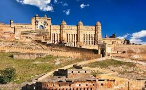
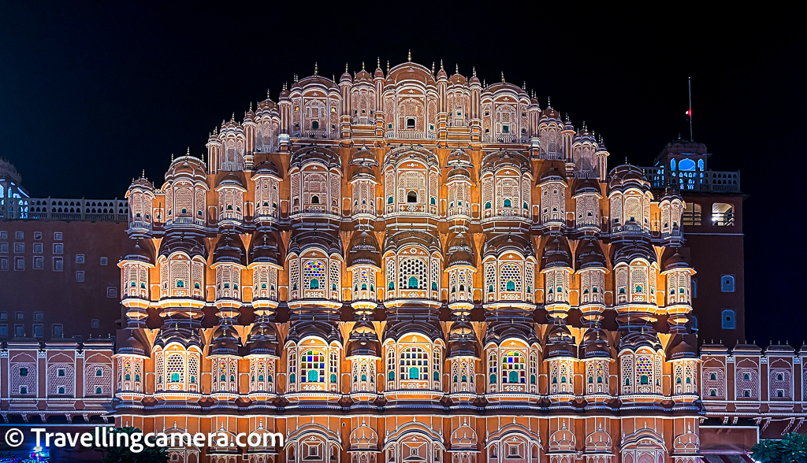
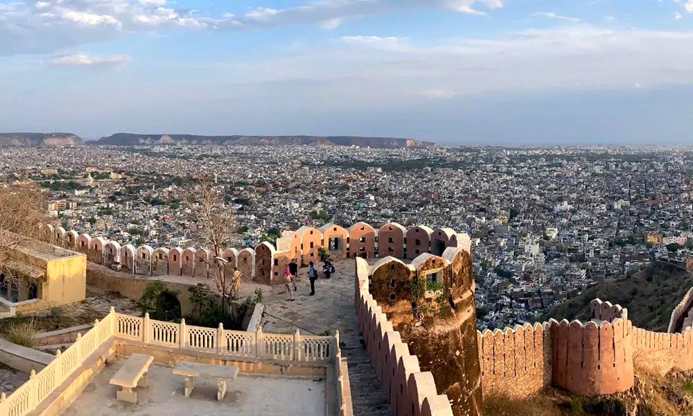
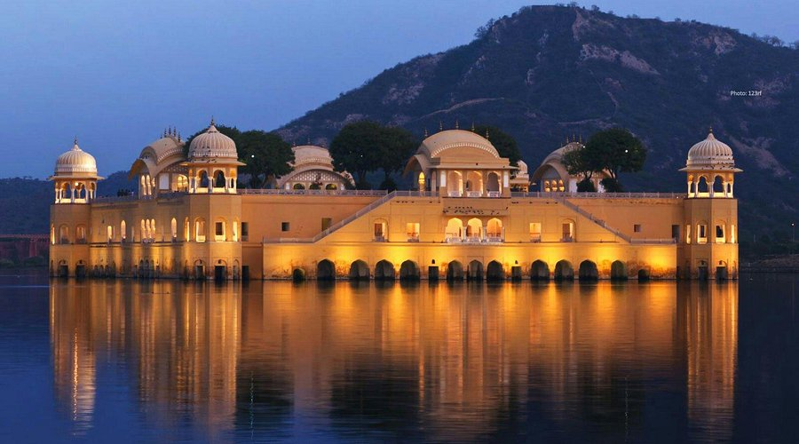
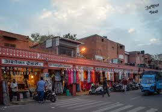

Jaipur - The Pink City
Discover the royal charm of Jaipur, Rajasthan’s vibrant capital. Marvel at palaces, forts, temples, and bustling markets that reflect the grandeur of Rajputana heritage.

Amber Fort
Known for its artistic Hindu-style elements, Amber Fort offers elephant rides, beautiful courtyards, Sheesh Mahal, and panoramic views of the Aravalli Hills.

Hawa Mahal
The Palace of Winds is a five-story pink sandstone structure with 953 windows, designed for royal ladies to observe street life discreetly.

City Palace
Located in the heart of Jaipur, this palace complex includes courtyards, gardens, and museums showcasing royal costumes and weaponry.

Jantar Mantar
A UNESCO World Heritage Site, it features the world’s largest stone sundial and several astronomical instruments built by Maharaja Jai Singh II.

Nahargarh Fort
Perched on the Aravalli Hills, Nahargarh Fort offers scenic sunset views and once served as a defense fort and retreat for the royal family.

Jal Mahal
Set in the middle of Man Sagar Lake, Jal Mahal is a tranquil, partially submerged palace admired for its Rajput architecture and reflection on water.

Bapu Bazaar
A shopper’s paradise in Jaipur, famous for vibrant textiles, mojris, jewelry, and local handicrafts at reasonable prices in a lively market setting.
Tour Details
- Duration: 3 Days / 2 Nights
- Best Time to Visit: October to March
- Price: ₹7,500 per person
- Includes: Hotel Stay, City Tours, Entry Tickets, Local Guide